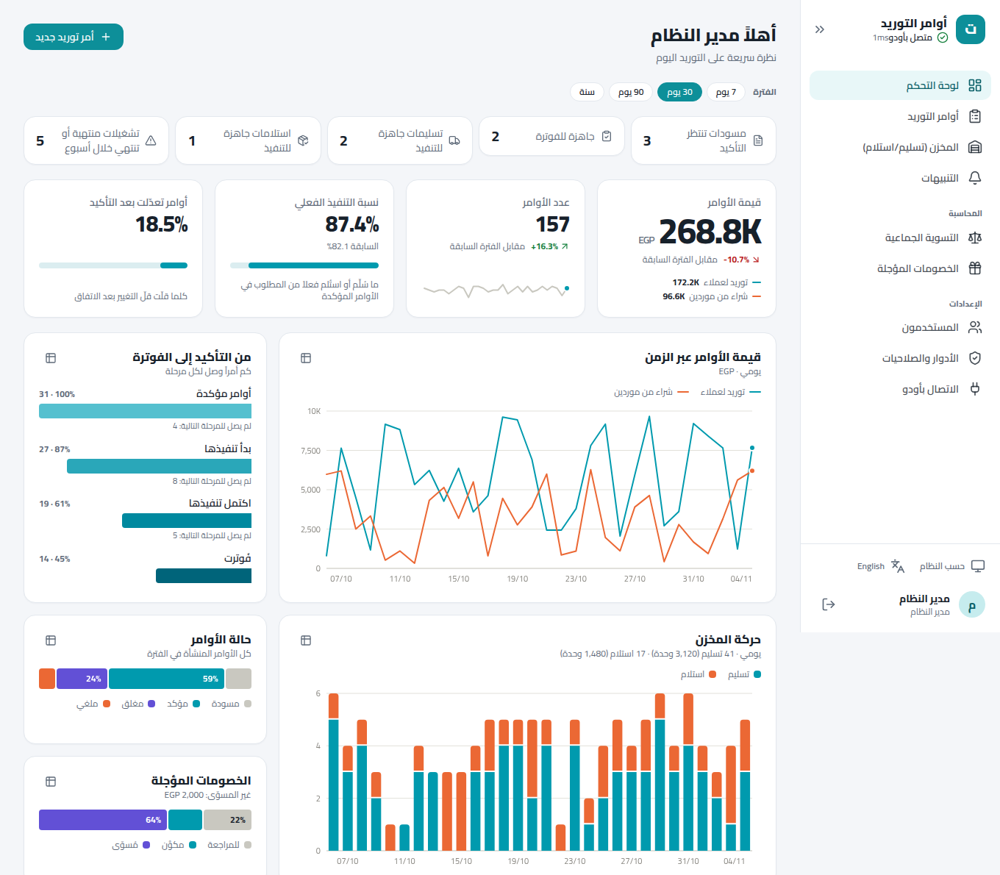
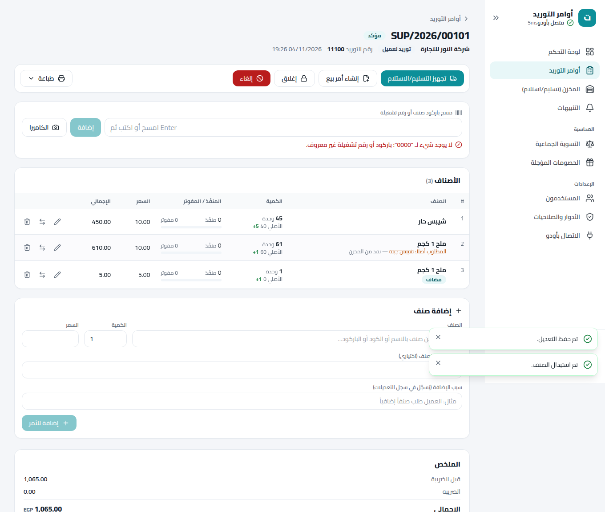
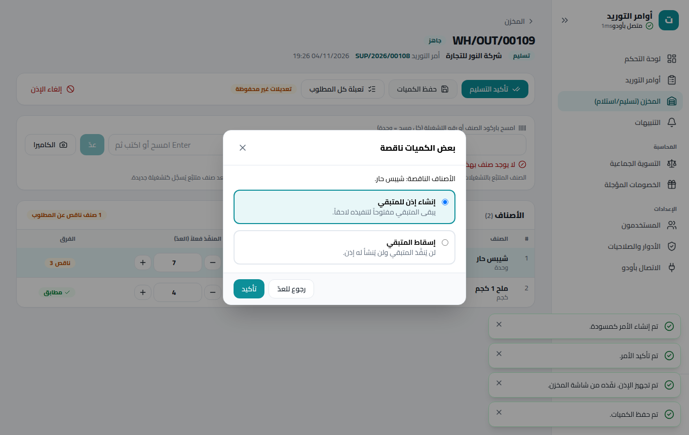
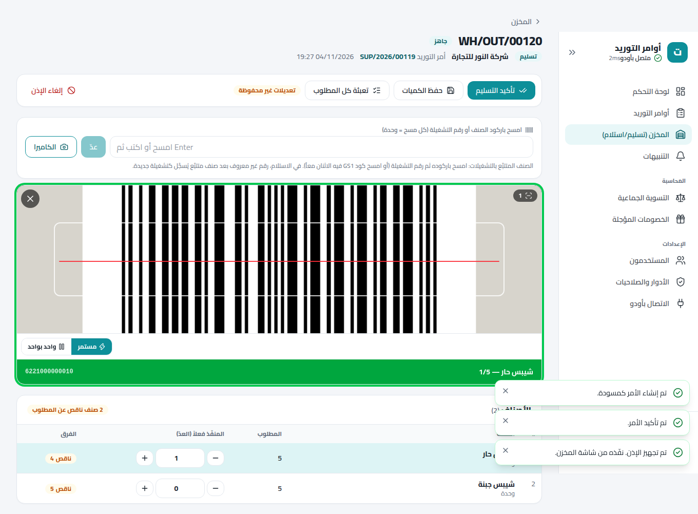
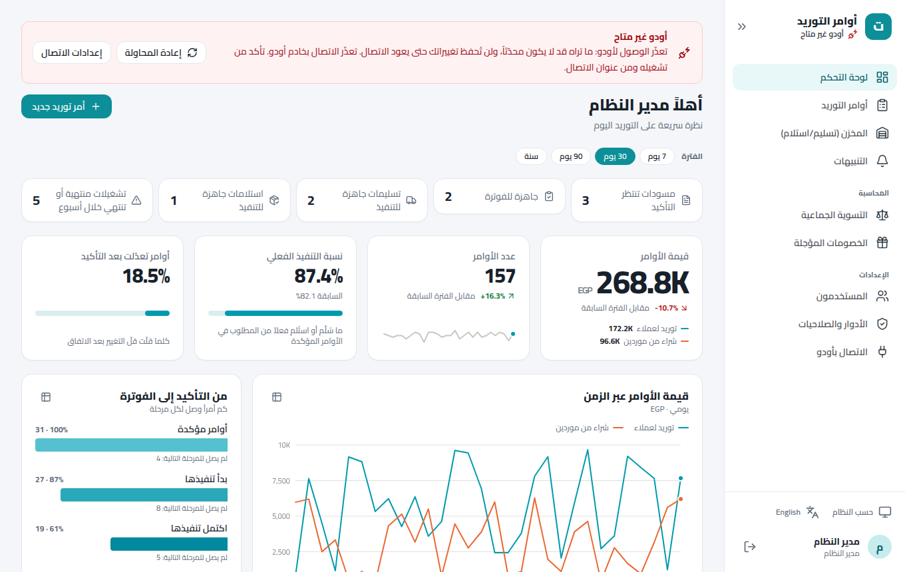

أودو 20 مع تطبيق ويب يعمل على الجوال والحاسوب وثيقة الحل، ودورة العمل، وما أُنجز حتى الآن
الإصدار
1.0 — نسخة التجربة
التاريخ
٤ نوفمبر ٢٠٢٦
البيئة المستهدفة
أودو 20 (Community أو Enterprise) + تطبيق ويب في حاوية خلف HTTPS
الحالة
جاهز للتجربة لدى العميل — لم يُعتمد للإنتاج بعد
الموجَّه إلى
الإدارة، ومسؤولو التشغيل والمخازن والحسابات، والفريق التقني
المحتويات
ملخص تنفيذي
الفكرة: أمر التوريد هو المحور
البنية التقنية
الموديولات المنجزة وربطها بالمتطلبات
دورة العمل خطوة بخطوة
تطبيق الويب
الصلاحيات والأمان
الجودة والاختبارات
النشر والتشغيل
حدود معروفة وقرارات مفتوحة
الخطوات التالية
ملاحق
١. ملخص تنفيذي
بُني النظام ليعالج واقعاً يتكرر في التوريد: الأوامر تتغير أثناء التجهيز، والصنف المسلَّم قد يختلف عن المطلوب، والتسليم قد يسبق أي مستند، والفاتورة يجب أن تعكس ما تحرّك فعلاً لا ما كُتب في البداية. لذلك جُعل أمر التوريد نقطة البداية، وتُولَّد منه سائر المستندات (عرض السعر، أمر البيع أو الشراء، التسليم أو الاستلام، الفاتورة) في أي وقت، أو تُربط به لاحقاً. والواقع الفعلي هو المرجع، والمستندات تتبعه.
ما أُنجز ٨ موديولات لأودو 20 تغطي المتطلبات الخمسة عشر؛ وواجهة ويب كاملة (أوامر، مخزن، تنبيهات، تسوية، خصومات، مستخدمون وصلاحيات)؛ قارئ باركود بكاميرا الجوال؛ لوحة مؤشرات برسوم؛ تثبيت كتطبيق على الجوال؛ عربي وإنجليزي وفاتح وغامق؛ حاوية جاهزة للنشر بنطاق وHTTPS.
كيف تحققنا ١٤٠ اختباراً آلياً على أودو 20 الحقيقي، و٤٤ سيناريو في متصفح حقيقي (يشمل كاميرا وهمية تبثّ باركود فعلياً، و٧ أحجام شاشات)، مع مراجعة بصرية للرسوم والتقارير المطبوعة.
ما لم يتم بعد
لم تُجرَّب الواجهة على بيانات العميل الحقيقية ولا على أجهزة موظفيه، ولم تُعتمد الصلاحيات ولا حسابات الخصومات المؤجلة من محاسبكم. هذه هي بالضبط غاية مرحلة التجربة الموضحة في «خطة التجربة والاختبار» المرفقة.
القيمة المتوقعة
المجال
قبل
مع النظام
الفاتورة
تُبنى من الطلب ثم تُصحَّح يدوياً عند اختلاف المسلَّم
تُبنى تلقائياً من الكميات والأصناف الفعلية، وتحتفظ بالرابط للأمر الأصلي
التغييرات بعد الاتفاق
إلغاء المستند وإعادة إنشائه أو تعديل بلا أثر
تعديل مع سبب في سجل لا يُحذف، بصلاحية محددة
عدّ البضاعة
إدخال يدوي للكميات والتشغيلات
مسح بالكاميرا أو بالماسح، والعدّ فوري على الجهاز، وGS1 يعطي الصنف والتشغيلة بمسح واحد
كل مستند يُولَّد من الأمر أو يُربط به لاحقاً، دون تكرار الحركات المخزنية
سيناريوهات الواقع التي يغطيها
الواقع
ما يفعله النظام
توريد بلا عرض سعر
أمر توريد ← تسليم ← فاتورة بالفعلي، ولا مستند آخر مطلوب
توريد بعرض سعر
زر «عرض سعر» يطبع من الأمر مباشرة (معاينة ثم PDF أو XLSX) دون تحويله لأمر بيع
تسليم قبل أي مستند
إذن التسليم يُنشأ من الأمر، ثم يُبنى أمر البيع من المسلَّم فعلاً ويُربط بحركاته دون تسليم مكرر
استلام قبل أمر الشراء
المعالجة نفسها مع المشتريات
استبدال أثناء التجهيز
يتغير الصنف الفعلي ويبقى المطلوب الأصلي وسبب الاستبدال ظاهرين
تعديل بعد التأكيد
إضافة أو حذف أو استبدال أو تغيير كمية دون إلغاء المستند، بصلاحية، وكل تعديل في سجل بصاحبه وسببه
تسليم على دفعات
المتبقي يصبح إذناً جديداً مرتبطاً بالأمر نفسه
فاتورة بالفعلي
تُبنى من الكميات الفعلية بعد المرتجعات، وتحتفظ بالرابط إلى سطر الأمر
٣. البنية التقنية
المتصفح لا يتكلم مع أودو أبداً: مفتاح الربط يبقى في خادم التطبيق
قرارات التصميم الأساسية
أودو هو المصدر الوحيد للبيانات. لا تُخزَّن في التطبيق أوامر ولا أصناف؛ يخزّن فقط مستخدميه وأدوارهم وسجل تدقيق صغير.
الصلاحيات في التطبيق. مستخدمو الويب لا يُنشأون في أودو؛ أودو يرى حساب ربط واحداً، ويعرف الشخص الفعلي من اسمه المسجّل في الأمر وسجل التعديلات («بواسطة أحمد عبر التطبيق»).
واجهة خدمة واحدة supply_api. دوال تستقبل معرّفات وتعيد JSON موحداً {ok, data, error}، ولا تحوي قاعدة عمل: كل شيء يمرّ بالدوال الأصلية في الموديولات.
منع التكرار. كل كتابة لها idempotency_key: الضغط المزدوج أو إعادة المحاولة لا تكرّر الأثر.
الفشل لا يترك أثراً. أي خطأ في منتصف عملية يُلغي ما سبقه في الطلب نفسه.
التنفيذ على الجهاز حيث يلزم السرعة. العدّ والمسح يحدثان على الجوال فوراً ويُحفظان مع الإذن.
المكونات
المكوّن
التقنية
المسؤولية
موديولات أودو
Python / أودو 20
المنطق التجاري والبيانات والتقارير المطبوعة
تطبيق الويب
Next.js 16، TypeScript، Tailwind
الشاشات، الصلاحيات، المسح، لوحة المؤشرات
قاعدة التطبيق
SQLite داخل الحاوية (مجلد /data)
مستخدمون، أدوار، إعدادات الاتصال (المفتاح مشفّر)
الحاوية والنطاق
Docker + Caddy
التشغيل، شهادة HTTPS تلقائية، إعادة التشغيل عند العطل
٤. الموديولات المنجزة وربطها بالمتطلبات
الموديول
ما يقدمه
المتطلبات
supply_order
أمر التوريد وأسطره، سير العمل (مسودة ← مؤكد ← مغلق/ملغي)، تجهيز التسليم والاستلام، الفاتورة بالفعلي، الاستبدال، سجل تعديلات لا يُحذف، الأرقام الأصلية والحالية والتغيير، طباعة عرض السعر، حقل رقم التوريد النصي، ربط أوامر البيع والشراء والفواتير القائمة
١، ١٠
document_enhancement
ترقيم مرن للأسطر (نقل سطر لرقم آخر) وملاحظة لكل سطر تنتقل من مستند لآخر، وتظهر في الطباعة بخيار لكل شركة
٣، ١١، ١٢
product_tracking_plus
توليد أرقام التشغيلات تلقائياً بنمط (المنتج، التاريخ، المورد)، اختيار التشغيلة على السطر، حقل مسح الباركود في المستندات
٢، ٤، ٥
smart_alerts
تنبيهات الصلاحية بمهلة على المنتج أو الفئة، وتتبع أوامر الشراء التلقائية (MTO وإعادة الطلب) وربطها بالأمر المسبب والمتأخر منها
٩
invoice_customization
الفاتورة التجارية من بيانات الأمر، دمج أصناف في الطباعة فقط (مفتاح تجميع)، معاينة قبل الطباعة ثم PDF أو XLSX
٦، ٧، ٨
discounts_rebates
خصم شرطي بالسعر؛ برامج خصم تراكمي بشرائح (نسبة أو مبلغ أو بضاعة مجانية)؛ مخصص محاسبي صحيح وإشعار دائن/مدين يصفّي المخصص لا الإيراد
١٣، ١٤
smart_reconciliation
تسوية جماعية: تختار الفواتير المطلوبة فقط وتوزَّع عليها الدفعات حسب الاستحقاق أو تاريخ الفاتورة، مع سجل لا يُعدَّل
١٥
supply_api
الواجهة بين تطبيق الويب وأودو: أوامر، أسطر، مسح، أذونات المخزن، تنبيهات، تسوية، خصومات، لوحة المؤشرات، مستخدمو التطبيق، ومسارات الطباعة بمفتاح API
تطبيق الويب
الرقم يشير إلى ترتيب المتطلب في وثيقة المتطلبات الأصلية (١٥ متطلباً). كلها منفَّذة ومختبرة في أودو.
٥. دورة العمل خطوة بخطوة
الدورة الأساسية لتوريد إلى عميل (الشراء من مورد مرآته، بالاستلام بدل التسليم). كل خطوة تبيّن من يفعلها وأين وماذا يحدث في أودو.
١ إنشاءمسودة الأمر
◂
٢ تأكيدتجميد الكمية الأصلية
◂
٣ تجهيزإذن التسليم
◂
٤ عدّمسح وتشغيلات
◂
٥ تأكيد التنفيذمع/بلا متبقٍ
◂
٦ فاتورةمن الفعلي
◂
٧ تسويةوخصومات
إنشاء الأمرمندوب المبيعات — «أمر توريد جديد»: نوع الأمر (توريد لعميل أو شراء من مورد)، الشريك، رقم التوريد كما يعرفه العميل، الأصناف بالبحث أو بمسح الباركود، ملاحظة لكل صنف. يُنشأ مسودة، ويُطبَّق الخصم الشرطي تلقائياً حسب السعر.
عرض السعر (اختياري)مندوب المبيعات — «طباعة ← عرض السعر»: معاينة ثم PDF أو XLSX، دون تحويل الأمر لأمر بيع.
التأكيدمندوب المبيعات — تُجمَّد الكمية الأصلية لكل صنف، ويبدأ تتبع «الأصلي / الحالي / التغيير». من هنا لا يعدّل الأصناف إلا من يملك الصلاحية، ويُسجَّل كل تعديل بسببه.
تجهيز التسليم أو الاستلامأمين المخزن — «تجهيز التسليم»: يُنشأ الإذن بالكميات غير المخططة بعد، وتُحجَز التشغيلات المختارة. يُفتح الإذن في شاشة المخزن مباشرة. يمكن تنفيذ هذه الخطوة قبل أي أمر بيع أو شراء.
العدّأمين المخزن — يعدّ ما تحرّك فعلاً: بالأزرار +/−، أو بماسح لوحة المفاتيح، أو بكاميرا الجوال. الصنف ذو التشغيلات: مسح باركوده ثم رقم التشغيلة (أو كود GS1 واحد). في الاستلام، رقم غير معروف يُسجَّل تشغيلة جديدة. الزيادة عن المطلوب مسموحة وتُنبَّه.
تأكيد التنفيذأمين المخزن — إن كان هناك نقص يُختار: إذن للمتبقي (تسليم على دفعات) أو إسقاط المتبقي. عند تشغيلات منتهية الصلاحية يُطلب تأكيد صريح. تتحدث «المنفّذ» في الأمر، وإن زاد المنفّذ عن المطلوب يرتفع المطلوب إلى ما حدث فعلاً ويُسجَّل.
التعديل والاستبدال أثناء ذلكأمين المخزنالمدير — إضافة صنف (يُخطَّط له إذن جديد تلقائياً)، تغيير كمية أو سعر بسبب، استبدال صنف (قبل التأكيد أو بعده، مع إرجاع ما تحرّك إن لزم)، حذف صنف لم يتحرك. كل ذلك يظهر في «سجل التعديلات».
المرتجعأمين المخزن — من الإذن المنفّذ: كمية مرتجعة لكل صنف، تعود للمخزن وتُخصم من المنفّذ، فلا تُفوتَر.
الفاتورة من الفعليالمحاسب — «إنشاء فاتورة من الفعلي»: تُبنى من المنفّذ صافياً من المرتجع وغير المفوتر سابقاً، بأرقام الأسطر وملاحظاتها ومفاتيح التجميع.
الطباعةالمحاسب — الفاتورة التجارية أو الفاتورة (مع دمج الأصناف ذات مفتاح التجميع في الطباعة فقط): معاينة ثم PDF أو XLSX.
إنشاء أمر البيع أو الشراء (في أي وقت)مندوب المبيعات — إن احتاج المستند الرسمي: يُبنى من الأمر ويُربط بحركاته القائمة دون تكرار تسليم.
التسوية الجماعيةالمحاسب — يختار العميل أو المورد والفترة، يحدد الفواتير المطلوبة (لا شيء يُحدَّد عنه)، فتوزَّع الدفعات عليها فقط وتُسجَّل كل مطابقة.
الخصومات المؤجلةالمحاسب — تُحتسب كل فترة منتهية تلقائياً: «تكوين المخصص» ثم «إصدار إشعار» يصفّي المخصص دون تكرار الأثر على الإيراد أو التكلفة.
الإغلاقالمدير — «إغلاق» يمنع أي تعديل لاحق.
تفرّعات شائعة
الحالة
المسار
أمر بيع أو شراء قائم مسبقاً في أودو
زر «إنشاء أمر توريد» من المستند يتبنّى حركاته وفواتيره، ويدخل في الدورة من الخطوة المناسبة
توريد من مورد لخدمة توريد لعميل
ربط الأمرين (linked_supply_id)، ويظهر أمر الشراء التلقائي (MTO) على الأمر المسبب له
انقطاع الاتصال بأودو
مؤشر دائم أعلى الشاشة وشريط تحذير؛ لا تُحفظ تغييرات حتى يعود الاتصال
إلغاء الإذن
تعود الكمية «غير مخططة» في الأمر فيُجهَّز إذن جديد
٦. تطبيق الويب

لوحة المؤشرات (بيانات تجريبية): قيمة الأوامر، قمع التنفيذ، حركة المخزن، الصلاحية، الشركاء، الخريطة الحرارية
الشاشات
الشاشة
الوظيفة
لوحة المؤشرات
أرقام رئيسية، اتجاه القيمة (توريد مقابل شراء)، قمع التأكيد إلى الفوترة، أكثر الأصناف والشركاء، حركة المخزن وساعات الذروة، الصلاحية، التعديلات بعد التأكيد، والخصومات؛ مع جدول بديل لكل رسم، ومرشح فترة (٧ / ٣٠ / ٩٠ / ٣٦٥ يوماً)
أوامر التوريد
قائمة بحث ومرشحات؛ شاشة الأمر بالأصناف وإجراءات سير العمل والمستندات المرتبطة وسجل التعديلات والطباعة
المخزن
قائمة الأذونات، وشاشة العدّ بالمسح أو الأزرار، التشغيلات، المتبقي، المرتجع، الإلغاء
التنبيهات
الصلاحية (منتهية أو قريبة) والمشتريات التلقائية والمتأخر منها
التسوية الجماعية / الخصومات المؤجلة
للمحاسبة، بنفس منطق أودو
المستخدمون والأدوار والاتصال بأودو
إدارة الحسابات والصلاحيات، وربط أي خادم أودو 20 مع فحص من خمس خطوات قبل الحفظ

أمر مؤكد بعد تعديل واستبدال، وسجل التعديلات

تأكيد تسليم ناقص: إذن للمتبقي أو إسقاطه
القراءة بكاميرا الجوال
زر «الكاميرا» في شاشات الإذن والأمر والأمر الجديد. صُمم للسرعة وفق أفضل الممارسات الحالية:
فك الترميز على الجوال نفسه (القارئ الأصلي في Chrome على أندرويد، وبديل WebAssembly على آيفون)، ولا تُرسَل صور لأي خادم.
صيغ محددة (EAN وUPC وCode128/39 وITF وQR وDataMatrix) وقراءة من الإطار المركزي: أسرع وأقل أخطاءً.
ملصق واحد = عدّة واحدة؛ تُعدّ ثانية بعد أن يغيب (صندوق جديد). الرموز الضعيفة تُؤكَّد بقراءتين.
العدّ فوري بلا انتظار الشبكة، ويُحفظ مع الإذن (تحذير عند المغادرة بتعديلات غير محفوظة).
صوت واهتزاز ولون مختلف للنجاح والتكرار والتحذير والخطأ؛ الكاميرا الخلفية بتركيز مستمر ومصباح وتكبير حيث يتوفر.
نمط «مستمر» (جرد وتحضير) ونمط «واحد بواحد» (استلام وتحميل)؛ توفير للبطارية وإغلاق للكاميرا عند إخفاء التبويب.
GS1: مسح واحد يعطي الصنف والتشغيلة معاً.

العدّ بالكاميرا على شاشة الإذنقوائم بطاقات على الجوال
التثبيت كتطبيق (PWA)
تُفتح الأيقونة من الشاشة الرئيسية كتطبيق مستقل بلا شريط المتصفح، مع اختصارَي «المخزن» و«أمر جديد». على أندرويد يظهر زر التثبيت؛ وعلى آيفون يشرح التطبيق الخطوتين. لا يُخزَّن أي صفحة أو بيانات خاصة بالمستخدم (للأمان)، ولا يُحدَّث التطبيق أثناء العمل حتى لا يضيع عدّ غير محفوظ.
اللغة والمظهر والتوافق
عربي (من اليمين لليسار) وإنجليزي، ووضع فاتح وغامق أو حسب النظام، وشريط جانبي قابل للطي.
فُحصت كل الشاشات آلياً على ٧ أحجام من جوال ٣٦٠px إلى شاشة ٢٥٦٠px: بلا تمرير أفقي، وبأهداف لمس مريحة.
حالة الاتصال بأودو ظاهرة دائماً: أيقونة وكلمات وزمن الاستجابة، وشريط تحذير عند الانقطاع أو البطء أو رفض المفتاح.

انقطاع أودو: شريط تحذير ومؤشر في الشريط الجانبيالوضع الغامق والإنجليزية
٧. الصلاحيات والأمان
الصلاحيات
تُحدَّد داخل تطبيق الويب من شاشة «الأدوار والصلاحيات»: ٢٧ صلاحية تُجمَّع في أدوار قابلة للتعديل، وتُفحص في الخادم (الصفحات والإجراءات والطباعة) وليس في الواجهة فقط. التعديل يسري فوراً.
الدور الافتراضي
أبرز ما يملكه
مدير النظام
كل الصلاحيات بما فيها المستخدمون والأدوار والاتصال بأودو
مدير توريد
كل التشغيل (أوامر، مخزن، فواتير، تسوية، خصومات) دون إعدادات النظام
مندوب مبيعات
إنشاء الأوامر وتعديل المسودات وتأكيدها وطباعتها وإنشاء أمر البيع/الشراء، وعرض المخزن
الدخول والصلاحيات، دورة الأمر كاملة، المسح بكاميرا وهمية تبثّ باركوداً حقيقياً، العدّ والتسليم الناقص والمرتجع، الاتصال بأودو وانقطاعه، الإنجليزية والوضع الغامق، التثبيت، ومراجعة التوافق على ٧ أحجام شاشة
فحص الألوان
—
ألوان الرسوم فُحصت بمدقّق (تمييز المصابين بعمى الألوان، التباين، ترتيب التدرج) في الفاتح والغامق
المراجعة البصرية
—
لقطات كل شاشة بأحجامها، وتقارير PDF الفعلية (عرض السعر والفاتورة التجارية والفاتورة المدمجة)
قيد على هذه الاختبارات: اختبارات المتصفح تعمل على خادم أودو تجريبي يحاكي واجهة supply_api بدقة، أما جانب أودو فمختبر على أودو 20 حقيقي. لم يُختبر التطبيق بعد على جوالات العميل ولا بإضاءة مخازنه ولا ببياناته؛ ولذلك التجربة.
٩. النشر والتشغيل
١) تجهيز أودو
نسخ مجلدات الموديولات إلى مسار الإضافات في خادم أودو، ثم «تحديث قائمة التطبيقات».
تثبيت الموديول supply_api؛ ويجلب معه كل الموديولات الأخرى (الأوامر، المخزون والباركود، التنبيهات، الفواتير، الخصومات، التسوية).
إنشاء مستخدم تكامل داخلي (مجموعة «Supply Orders / Manager» مع صلاحيات المخزون والمحاسبة) وتوليد مفتاح API له من «Account Security».
ضبط معامل النظام supply_order.service_user_id برقم هذا المستخدم (يخبرك التطبيق برقمه عند الفحص).
ضبط الحسابات المقترحة للخصومات المؤجلة (زر في الشركة) ومراجعتها مع المحاسب.
٢) نشر التطبيق على حاوية باسم نطاق
cd supply_web/deploy
cp .env.example .env # عبّئ DOMAIN=supply.example.com و SESSION_SECRET (ناتج: openssl rand -base64 48)
docker compose up -d --build
يوجّه مدير النطاق سجل A إلى عنوان الخادم ويفتح المنفذين 80 و443؛ فيستخرج Caddy شهادة HTTPS ويجدّدها تلقائياً. أول زيارة تنشئ حساب مدير النظام، ثم «الإعدادات ← الاتصال بأودو» لإدخال العنوان والمفتاح: يفحص التطبيق خمس خطوات (الوصول، الإصدار 20، قبول المفتاح، تثبيت الموديولات، مستخدم التكامل) ولا يحفظ اتصالاً فاشلاً.
الدليل الكامل بخطوات النسخ الاحتياطي والتحديث وحل الأعطال في ملف docs/DEPLOYMENT.md بالمستودع.
٣) النسخ الاحتياطي والتحديث
بيانات التطبيق في مجلد واحد (app-data)، وتؤخذ نسخته بأمر واحد (مذكور في الدليل). بيانات العمل نفسها في قاعدة أودو وتُنسخ كالعادة.
التحديث: سحب الشيفرة ثم docker compose up -d --build؛ تتحدث الأجهزة المثبَّتة عند إغلاق التطبيق وفتحه.
١٠. حدود معروفة وقرارات مفتوحة
البند
التفصيل
القرار المطلوب
الأدوار والصلاحيات
اقتراح مبدئي (٥ أدوار)
اعتماد العميل أو تعديله في التجربة
حسابات الخصومات المؤجلة
اقتراح بأكواد مؤقتة (RBT01–04) ويومية REB؛ الضريبة على إشعارات الخصم غير مطبّقة
مراجعة المحاسب
العملات
التجميع في لوحة المؤشرات بعملة الشركة؛ التسوية تدعم فروق العملات
هل تُستخدم عملات أجنبية في التوريد؟
تقييم المخزون
لا يفرض النظام طريقة؛ يتبع إعدادات المنتج والفئة في أودو
تأكيد الطريقة المعتمدة (AVCO / FIFO)
استبدال صنف على أمر شراء قائم
غير مدعوم حالياً (يرفضه النظام برسالة واضحة)
هل يلزم؟
دفعات بلا قيد يومية
أودو مع المحاسبة لا ينشئ قيداً للدفعة حتى تُطابَق مع كشف البنك؛ فلا تظهر في التسوية الجماعية
الاتفاق على دورة الدفعات
تاريخ انتهاء GS1
يُقرأ لكنه لا يُرسل لأودو (يُحسب من إعدادات المنتج)
هل يلزم إرساله؟
العمل بلا اتصال
لا يعمل التطبيق بلا إنترنت (تظهر صفحة توضيحية)؛ العدّ غير المحفوظ يضيع إن أُغلقت الصفحة
هل يلزم حفظ تلقائي أو عمل دون اتصال؟
الباركود في أذونات أودو نفسه
يعتمد على تطبيق الباركود في Enterprise؛ تطبيق الويب لا يحتاجه
—
١١. الخطوات التالية
١ تجهيز بيئة التجربةقاعدة أودو تجريبية + نشر التطبيق
◂
٢ تدريبساعة لكل دور
◂
٣ تجربة موجَّهةسيناريوهات مكتوبة
◂
٤ استخدام حرحالات حقيقية
◂
٥ ورشة ملاحظاتوترتيب الأولويات
◂
٦ تعديلات وقرارالإنتاج أو جولة ثانية
تفاصيل التجربة بالكامل (المشاركون، السيناريوهات لكل دور، معايير النجاح، آلية رفع الملاحظات) في وثيقة «خطة التجربة والاختبار»، ومعها ملف «سجل نتائج التجربة» (جدول إلكتروني) لتسجيل النتائج والملاحظات.
ما نحتاجه من العميل قبل البدء
خادم أودو 20 للتجربة (أو قاعدة بيانات تجريبية على الخادم الحالي) بصلاحية تثبيت موديولات.
نطاق فرعي (مثل supply.company.com) وخادم ينشر عليه التطبيق، أو موافقتنا على استضافته.
بيانات تجريبية قريبة من الواقع: أصناف بباركودات حقيقية، شركاء، تشغيلات وتواريخ صلاحية، ضرائب وقوائم أسعار.
أسماء المشاركين وأدوارهم، وجوالاتهم للتثبيت.
مسؤول من العميل لاعتماد الأدوار والحسابات المحاسبية.
١٢. ملاحق
أ) الصلاحيات الـ ٢٧
المجموعة
الصلاحيات
أوامر التوريد (١٥)
عرض، إنشاء، إنشاء من أمر بيع/شراء قائم، تعديل أصناف المسودة، تعديل أصناف أمر مؤكد، استبدال صنف، تأكيد، إلغاء/إعادة لمسودة، إغلاق، مسح الباركود، تجهيز التسليم/الاستلام، إنشاء أمر بيع، إنشاء أمر شراء، فاتورة من الفعلي، طباعة وتنزيل
المخزن (٥)
عرض الأذونات، تحديد الكميات والمسح، تأكيد التسليم/الاستلام، مرتجع، إلغاء إذن
التنبيهات (١)
عرض تنبيهات الصلاحية والمشتريات التلقائية
المحاسبة (٣)
التسوية الجماعية، عرض الخصومات المؤجلة، تكوين وتسوية الخصومات
الإعدادات (٣)
إدارة المستخدمين، إدارة الأدوار، إعدادات الاتصال بأودو